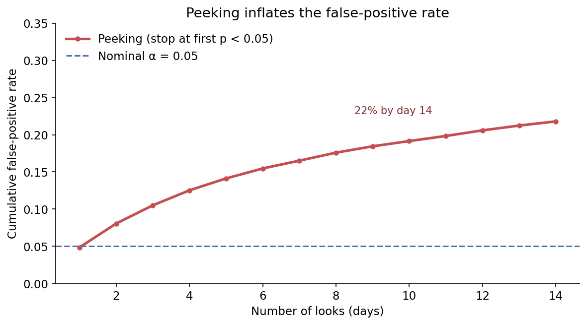

3.2 A/B Test Design
Your team just finished a two-week A/B test on the new checkout page. Everyone is eager to see the results. Then the numbers come in:
| Variant | Users | Conversions | CVR |
|---|---|---|---|
| Control | 4,800 | 112 | 2.34% |
| Treatment | 4,900 | 112 | 2.28% |
The p-value is 0.42. The team says, “No significant difference. The redesign doesn’t work. Let’s move on.”
But that conclusion isn’t right—or at least, it’s not backed up by the data. A p-value of 0.42 doesn’t mean there’s no effect. It just means the test couldn’t tell a small effect from random noise. The difference between “no effect” and “we can’t tell” comes down to whether your test had enough power.
The Power Problem
Statistical power is the chance your test will spot a real effect if it’s there. Most teams aim for 80% power, which still means there’s a 20% chance you’ll miss a real effect even if it exists.
Here’s the uncomfortable truth: for low-conversion events like purchases (say, a 2% conversion rate), you need tens of thousands of users per group to detect a 0.5 point lift. Most teams run tests with far fewer. This is the 1/10 problem: you often need about 10 times more samples than you think.

Design Before You Run
The answer isn’t to give up on A/B testing. It’s to figure out the sample size you need before you start. The key inputs are:
- Baseline conversion rate (\(p_0\)): the current rate under the control condition.
- Minimum Detectable Effect (MDE): the smallest effect size you consider practically meaningful.
- Significance level (\(\alpha\), typically 0.05): the false positive rate you’re willing to tolerate.
- Power (\(1 - \beta\), typically 0.80): the probability of detecting the effect when it truly exists.
The intuition is simple: finding small effects in noisy data takes big samples. For a two-sample test of proportions with equal group sizes, the required sample size per group is approximately:
\[n \approx \frac{\left(z_{1-\alpha/2}\sqrt{2\bar{p}(1-\bar{p})} + z_{1-\beta}\sqrt{p_0(1-p_0) + p_1(1-p_1)}\right)^2}{(p_1 - p_0)^2}\]
where \(p_0\) is the control rate, \(p_1 = p_0 + \text{MDE}\) is the treatment rate you want to detect, \(\bar{p} = (p_0 + p_1)/2\) is the pooled rate, and the \(z\)-values are critical values from the standard normal distribution (≈1.96 for \(\alpha = 0.05\) two-sided and ≈0.84 for power = 0.80). The two square-root terms are the standard deviations of the difference under the null (using the pooled rate) and under the alternative (using each arm’s own rate); \(\delta = p_1 - p_0\) is the MDE in the denominator.
Two things follow from this. First, \(n\) scales with \(1/\delta^2\): halving the MDE roughly quadruples the required sample. Second, \(n\) grows with baseline variance through \(\bar{p}(1-\bar{p})\), so low-conversion metrics are doubly punishing—both the rate you’re trying to move and the lift you’re trying to detect are tiny.
Plugging in \(p_0 = 2.0\%\) and \(p_1 = 2.5\%\) (a 0.5-point lift) with \(\alpha = 0.05\) and 80% power gives about 13,800 users per group. In practice, after rounding and allowing for tracking loss and excluded users, teams plan for roughly 15,000 per group. Tightening the MDE to 0.25 points roughly quadruples this, to about 52,000 per group.

from statsmodels.stats.power import NormalIndPower
from statsmodels.stats.proportion import proportion_effectsize
# Example: CVR baseline 2%, MDE 0.5 pp, alpha=0.05, power=0.80
effect_size = proportion_effectsize(0.02, 0.025)
analysis = NormalIndPower()
n = analysis.solve_power(effect_size=effect_size, alpha=0.05, power=0.80)
print(f"Required sample size per group: {n:.0f}")Here, proportion_effectsize converts the two proportions into the effect size that statsmodels’ power routines expect, and NormalIndPower.solve_power solves for the sample size that satisfies the power equation. The result (~13,800) matches the closed-form formula above.
Do this calculation before you run the test, not after. Also, pre-register guardrail metrics—like revenue per user, page load time, or support tickets—that shouldn’t get worse even if your main metric improves.
CUPED: Getting a Larger Sample for Free
You’ve done the sample size math, and the number is huge. Your product doesn’t get enough traffic to hit it anytime soon. Is there a way to get the same precision with fewer users? CUPED (Controlled-experiment Using Pre-Experiment Data) helps by reducing the variance of your metric using data you already have. It’s like getting a bigger sample for free.
Take a customer who bought a lot in the month before the experiment. They’ll probably keep buying a lot during the experiment, no matter which group they’re in. Their high spending is mostly due to their past behavior, not the treatment. CUPED subtracts this predictable part from each user’s outcome, so the treatment effect is easier to see. The stronger the link between pre-experiment and in-experiment behavior, the more variance CUPED removes, and the fewer users you need.
Formally, let \(Y\) be the outcome and \(X\) a pre-experiment covariate (e.g., purchases in the prior 30 days). The adjusted outcome is:
\[Y_{\text{CUPED}} = Y - \theta \cdot (X - \bar{X})\]
where \(\theta = \text{Cov}(Y, X) / \text{Var}(X)\). The key result: the variance of the adjusted outcome reduces to \(\text{Var}(Y_{\text{CUPED}}) = \text{Var}(Y)(1 - \rho^2)\), where \(\rho\) is the Pearson correlation between \(X\) and \(Y\). If \(\rho = 0.7\), CUPED removes roughly half the variance, equivalent to doubling your sample size. Netflix and Microsoft report 20–50% reductions in required sample sizes using this technique. The most common covariate choice is the same metric measured in the pre-experiment period, which typically yields the strongest correlation.
Peeking Inflates False Positives
Checking results repeatedly before the test reaches its planned sample size increases the false-positive rate. If you check daily for 14 days and stop as soon as you see significance, the effective alpha can be 2–3 times higher than your nominal 0.05. Either commit to a fixed horizon or use sequential testing methods (such as confidence sequences) that formally budget alpha across interim looks.

Multiple Testing
When you test 20 metrics simultaneously, one of them will be “significant” at the 5% level by chance alone. Pre-register your primary metric and analyze it at nominal alpha. Treat secondary and exploratory metrics with appropriate skepticism; apply Bonferroni or Benjamini-Hochberg corrections to control false discoveries.
How to Interpret Null Results
A non-significant result doesn’t mean the treatment had no effect. It just means the test didn’t find an effect at your chosen significance level. Before you say “no effect,” check:
- Was the test adequately powered for the MDE you’re interested in?
- Is the confidence interval narrow enough to rule out meaningful effects?
- Could the test period have been atypical (holidays, outages, competing campaigns)?
Absence of evidence is not evidence of absence. If the 95% confidence interval for the treatment effect is [-1%, +2%], you cannot claim “no effect.” You can only say the data are consistent with effects ranging from a 1 percentage-point decrease to a 2 percentage-point increase.
But what if you can’t randomize? Maybe the treatment is already live, or there are ethical reasons you can’t run an experiment. That’s when you turn to quasi-experimental methods.